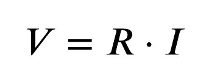

Multímetro
O multímetro é uma ferramenta essencial para quem trabalha com eletricidade, ele trabalha com diversas funções de medição, pois ele consegue atuar como voltímetro, medindo a tensão elétrica, amperímetro, medindo a corrente elétrica e ohmímetro, medindo a resistência dos componentes. Através do seletor rotativo, e as pontas de prova(cabo vermelho e preto), postas nos componentes para a medição.
Escala de Medição
As escalas são classificadas em nominal, ordinal, intervalar e de razão , com progressão crescente em termos de informação quantitativa e permissões operacionais.Uma escala de medição refere-se ao conjunto de regras que atribuem números ou categorias a atributos empíricos, determinando as operações matemáticas admissíveis
A Escala nominal classifica dados sem ordem ou hierarquia.
A escala ordinal classifica dados em categorias que possuem ordem(Ex: Nível de Satisfação,ruim,regular,bom).
A escala intervalar classifica os dados em ordem e intervalos iguais(Ex: Temperatura em celsius).
Razão (ou Proporcional): Igual à intervalar, mas tem um zero absoluto, permitindo proporções (Ex: Altura, peso, idade).
Lei de Ohm
A Primeira Lei de Ohm postula que um condutor ôhmico (resistência constante) mantido à temperatura constante, a intensidade (i) de corrente elétrica será proporcional à diferença de potencial (ddp) aplicada entre suas extremidades.
Ela é representada pela fórmula:
